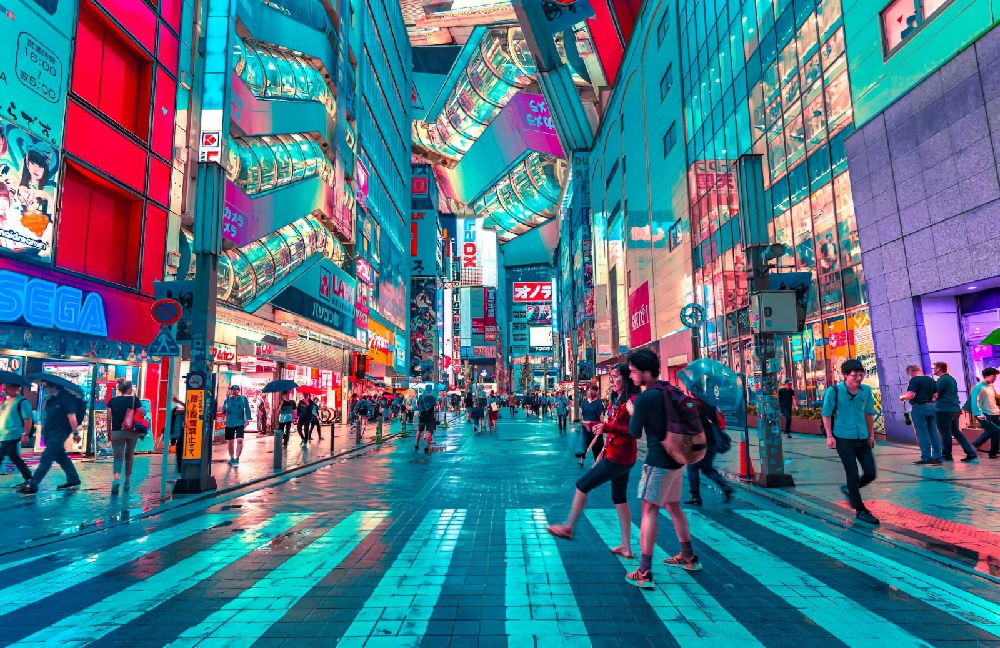

Informations sur Tokyo
Tokyo, capitale du Japon, est une métropole dynamique et futuriste, où tradition et modernité se côtoient harmonieusement, offrant une expérience urbaine unique.

Tokyo offre une expérience touristique unique, mêlant tradition et modernité. De ses temples historiques à ses quartiers animés, la ville offre quelque chose pour tous les goûts. Explorez ses jardins paisibles, découvrez sa vie nocturne animée et plongez dans sa culture populaire dynamique.

Tokyo, la capitale dynamique du Japon, est un mélange captivant de modernité et de tradition. Les visiteurs peuvent s'immerger dans l'histoire riche de la ville en explorant des sites emblématiques tels que le temple Senso-ji et le Palais impérial de Tokyo. Les rues animées de Shibuya et de Shinjuku offrent une multitude d'options de shopping, de restauration et de divertissement, tandis que des espaces verts tranquilles comme le parc Ueno offrent une évasion sereine. Les amateurs de cuisine peuvent se régaler avec une variété de plats japonais, du sushi aux spécialités de rue, tandis que les amateurs d'art peuvent admirer des œuvres traditionnelles et contemporaines dans les nombreux musées et galeries de Tokyo. Avec sa vie nocturne animée, ses expériences culturelles et ses attractions infinies, Tokyo promet un voyage inoubliable pour les voyageurs de tous horizons.
